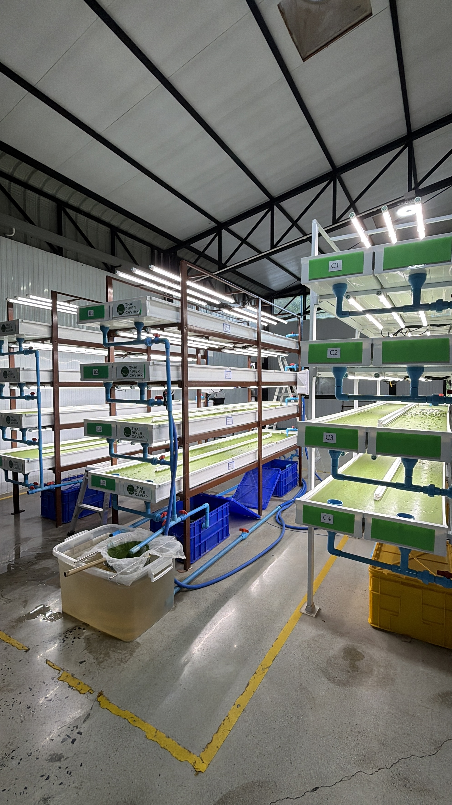
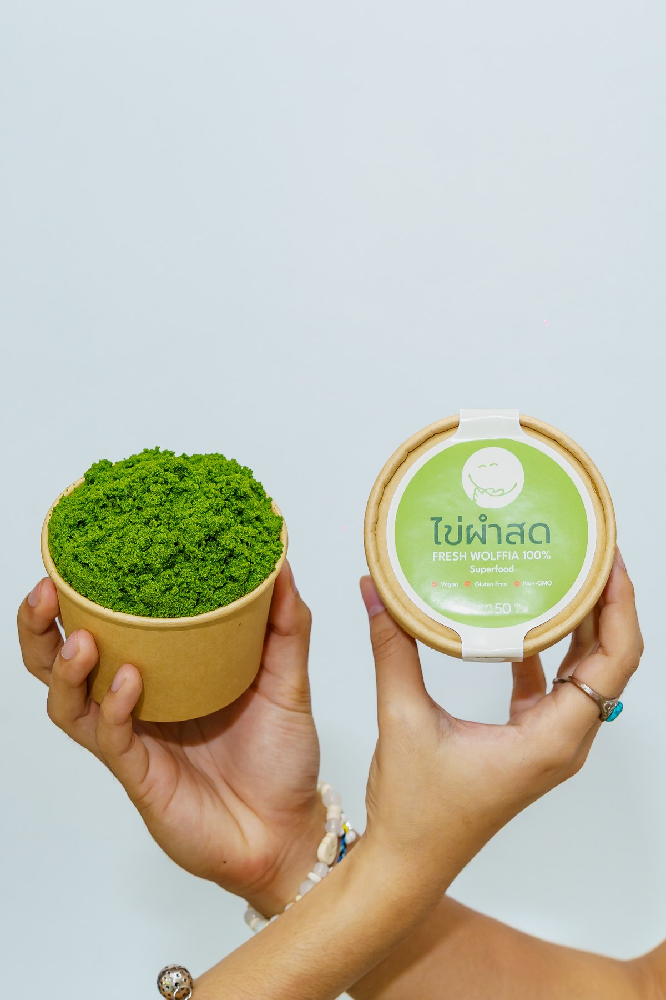

ไข่ผำ (Wolffia globosa) เป็นพืชดอกที่เล็กที่สุดในโลก เติบโตในแหล่งน้ำจืดของไทยมาอย่างยาวนาน เป็นแหล่งโปรตีนและสารอาหารที่คนไทยรู้จักดี แต่ยังไม่ค่อยถูกพูดถึงในตลาดโลก เราเชื่อว่าพืชชนิดนี้มีศักยภาพมากพอที่จะเป็นวัตถุดิบซูเปอร์ฟู้ดระดับสากล หากได้รับการเพาะเลี้ยงและควบคุมคุณภาพอย่างจริงจัง

assets/images/farm-wide.jpg
เริ่มต้นด้วยการเก็บและคัดเลือกสายพันธุ์ไข่ผำหลายแหล่ง เพื่อหาสายพันธุ์ที่มีศักยภาพด้านสารอาหารสูงที่สุด โดยเฉพาะวิตามินบี 12 ซึ่งพืชส่วนใหญ่ไม่สามารถผลิตได้ตามธรรมชาติ
ใช้เวลากว่า 1 ปีในการเพาะเลี้ยง ปรับสภาพแวดล้อม และพัฒนาสายพันธุ์อย่างต่อเนื่อง จนได้สายพันธุ์เฉพาะของไทย ริเวอร์ คาเวียร์ ที่ให้วิตามินบี 12 สูงกว่าไข่ผำทั่วไปในตลาดถึง 2.5 เท่า
ออกแบบระบบเพาะเลี้ยงเฉพาะของฟาร์ม ควบคุมคุณภาพน้ำและสภาพแวดล้อมตลอดกระบวนการ เพื่อความสะอาดและความสม่ำเสมอของผลผลิตทุกรอบ ให้ตรงตามมาตรฐานที่ผู้ซื้อในญี่ปุ่นและอเมริกาต้องการ
ส่งตรวจวิเคราะห์วิตามินบี 12 และค่าคาร์บอนฟุตพรินต์อย่างสม่ำเสมอ พร้อมขอการรับรองฮาลาลและวีแกน 100% เพื่อให้ลูกค้ามั่นใจได้ในทุกแบตช์ที่ส่งมอบ
วันนี้เราส่งวัตถุดิบไข่ผำให้กับแบรนด์อาหารเสริมและเครื่องสำอางทั้งในและต่างประเทศ พร้อมทั้งพัฒนาผลิตภัณฑ์พร้อมทานของเราเองอย่างเยลลี่ไข่ผำ เพื่อให้ผู้บริโภคทั่วไปได้สัมผัสคุณภาพเดียวกันนี้ด้วยตัวเอง
วิดีโอพาชมฟาร์มจะแสดงที่นี่
assets/video/farm-tour.mp4
เพาะเลี้ยงในระบบที่ควบคุมคุณภาพน้ำและสภาพแวดล้อม ลดการปนเปื้อนจากภายนอก
ส่งตรวจวิตามินบี 12 และความปลอดภัยของวัตถุดิบอย่างสม่ำเสมอ
กระบวนการเพาะเลี้ยงที่ผ่านการตรวจวัดค่าคาร์บอนฟุตพรินต์เป็นศูนย์
ทุกล็อตผลผลิตสามารถตรวจสอบย้อนกลับถึงรอบเพาะเลี้ยงและวันที่เก็บเกี่ยวได้

assets/images/farm-people.jpg
เบื้องหลังทุกแบตช์ไข่ผำที่ส่งออกจากฟาร์ม คือทีมงานที่ลงมือดูแลบ่อเพาะเลี้ยงทุกวันด้วยตัวเอง เราเชื่อว่าความสะอาดและคุณภาพที่แท้จริง เกิดจากความใส่ใจในรายละเอียดเล็ก ๆ ไม่ใช่แค่การมีใบเซอร์ติดผนัง เราจึงตั้งใจทำทุกขั้นตอนอย่างที่เราอยากให้คนในครอบครัวของเราได้ทานเองด้วย